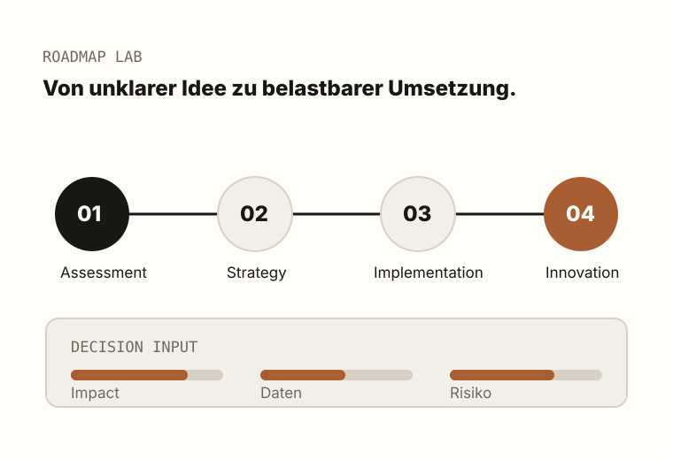
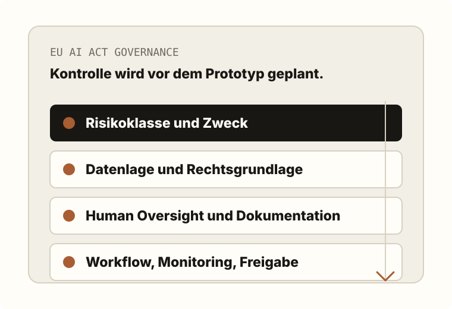

Transformation Roadmap
Vier Phasen, die KI aus der Idee in den Betrieb bringen.
Die Roadmap macht sichtbar, welcher Einstieg zu Ihrem Vorhaben passt: Analyse, Strategie, Umsetzung oder Skalierung.

Governance
EU AI Act wird nicht als Bremse behandelt, sondern als Designparameter.

Compliance früh in die Roadmap ziehen
Risikoklassifizierung, Dokumentation, Verantwortlichkeiten und Datenflüsse gehören in die ersten Workshops. So wird Umsetzung schneller, weil spätere Korrekturschleifen reduziert werden.
Interaktive Priorisierung
Welcher Einstieg passt zu Ihrem Use Case?
Die Regler simulieren eine erste Einordnung. Hoher Nutzen, gute Datenlage und niedrige regulatorische Risiken sprechen eher für Implementation; Unsicherheit verschiebt den Start Richtung Assessment oder Strategy.
Assessment
0
Strategy
0
Implementation
0
Innovation
0
Boardroom Brief
Code statt PowerPoints beginnt mit einer harten These.
Der bessere Einstieg ist selten ein Ideenworkshop. Entscheidend ist, ob die Organisation zuerst Klarheit, Kontrolle oder Umsetzung braucht.